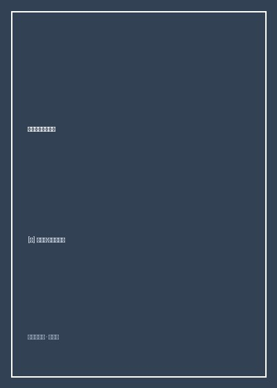

《星星是冰冷的玩具》

总体观点
《星星是冰冷的玩具》充满了俄罗斯文学特有的冷峻悲悯与哲学思辨。全书打破了西方科幻中常见的人类中心主义傲慢，将地球置于残酷的高维文明达尔文丛林法则之下，展现弱小文明在强权夹缝中的生存屈辱。
卢基扬年科深刻解构了所谓'绝对秩序'的乌托邦陷阱。高度发达的几何文明联盟看似杜绝了战争与冲突，其代价却是通过基因阉割与功能特化，将所有被征服种族退化为单一的生理零件工具。
小说最终宣告：文明的最高尊严不在于被豢养在和平动物园里的永生苟活，而在于敢于承担混乱、未知与毁灭风险的独立自决权。宁要在冰冷星海中自由探索，也绝不接受被强权施舍的锁链。
核心观点
-
1. 人类作为生理工具的屈辱：文明特化的异化深渊
在高级外星技术面前，人类唯一的比较优势竟然是神经系统能够耐受超空间跳跃带来的脑震荡，沦为替外星主人开飞船的活体导航仪。
领航员彼得每次执行跳跃任务都伴随着近乎撕裂灵魂的剧烈偏头痛与呕吐，人类在银河议会中没有发言权只有航行配额。 -
2. 几何文明的温水煮青蛙：伪装成仁慈的奴役
高等文明不靠屠杀征服，而是通过提供源源不断的基础生活物资，让弱小文明主动放弃自主研发科技的动力，成为精神婴儿。
地球从联盟免费领取合成食物与基础能源，换来的是整个母星基础科学停滞数百年、完全丧失独立抗风险能力。 -
3. 影子文明的虚无镜像：跨维度接触的认知震撼
探访完全脱离物理肉身的能量体与意识矩阵文明，揭示人类所执着的物质欲望在辽阔宇宙尺度上的微不足道与荒诞感。
彼得的飞船误入影子星球，目睹外星智慧体通过思维波共振构建又瞬间湮灭恒星的幻象，体验超越生存概念的极寒纯智。 -
4. 拒绝被修剪的生机：混乱的自由胜过秩序的死亡
强权试图消灭所有攻击性与不可预测性，但正是犯错、争斗、爱恨与非理性的冲动，构成了生命最核心的创造力源泉。
面对外星长官提出的'只要人类接受情绪阉割即可晋升一等公民'的提议，彼得在法庭上毫不犹豫地吐出嘲讽与拒绝。 -
5. 冰冷星海的微弱火种：为母星寻找真正的第三条道路
弱小种族既不能盲目臣服成为附庸，也不能以卵击石自取灭亡，在几大星际霸权的裂隙中巧妙周旋，是唯一的生存智慧。
彼得利用外星两大联盟争夺航线的利益矛盾，暗中盗取超空间引擎图纸并安全送回地球地下实验室。
全书思维导图 · 知识脉络树
全书结构
-
第一部分 弱小种族的跳跃：作为银河运载工具的人类
建立银河联盟残酷的种族分工世界观，展现人类领航员彼得在常规货运航线上的生理折磨与精神觉醒。
彼得驾驭联盟重型货船穿越空间褶皱，在昏迷边缘听见恒星辐射对神经末梢的微弱刮擦声，埋下反抗伏笔。 -
第二部分 接触影子文明：超维空间里的致命诱惑
货船遭遇异常引力坍缩，彼得与外星乘客被困在未知的影子星系，直面不可思议的非碳基生命体形态。
与自称'影人'的超维智慧体展开精神对话，发现联盟建立的所谓永久和平不过是统治者维系统治的人工谎言。 -
第三部分 几何文明的谎言：绝对秩序下的文明阉割
深入联盟首都行星，亲历议会高层的冷酷算计，目睹那些完全退化为单一功能的附庸文明悲惨下场。
看到曾经拥有璀璨艺术的鸟人文明，在长达千年的规训后，如今全族仅作为星际法庭的法警门卫而存在。 -
第四部分 反叛的火种：在强权夹缝中为母星争取生机
彼得联手具有同情心的外星反叛同盟，利用人类跳跃反应速度的极限，策划一场惊心动魄的星际大逃亡。
在追击舰队包围圈合拢前的三微秒内，彼得肉身徒手超频推进器，以近乎自杀的短距多段跳跃撕开逃生缺口。 -
第五部分 冰冷星海的抉择：宁要混乱的自由，不要圈养的永生
重返太阳系，彼得面对地球政府内部主降派的问难，向全体人类发出振聋发聩的自由宣言，宣告自立时代的开启。
人类舰队在木星轨道拉响战斗警报，彼得遥望群星轻声说道：'星星依然冰冷，但人类已经不再是它们的玩具'。